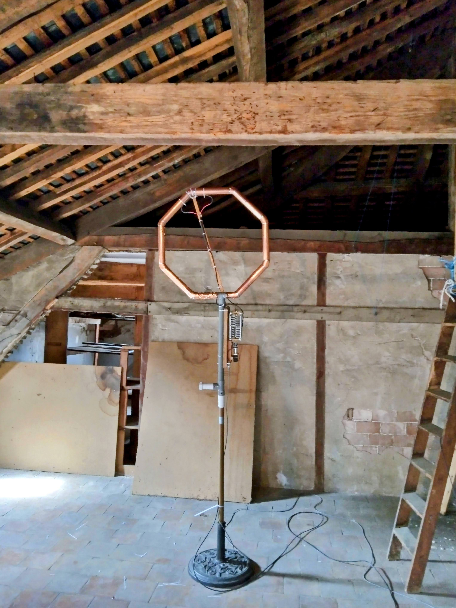
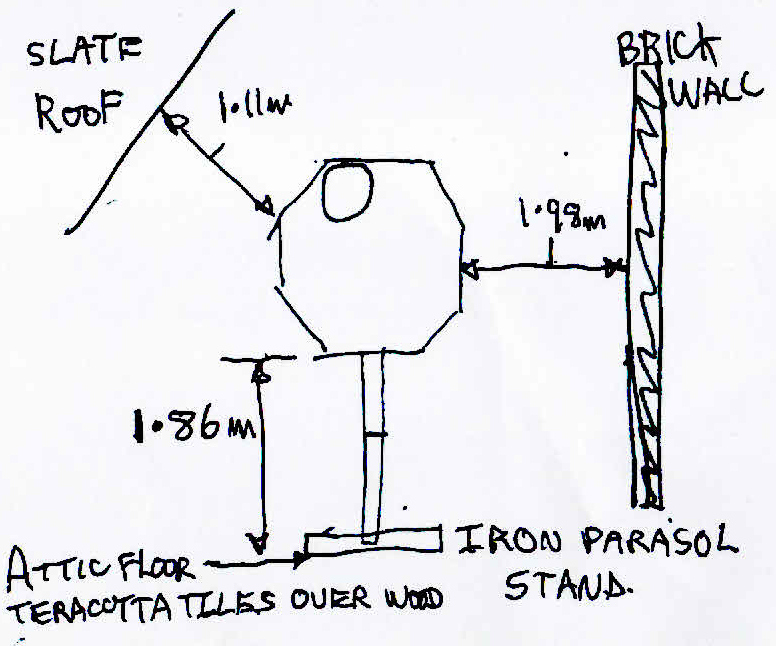
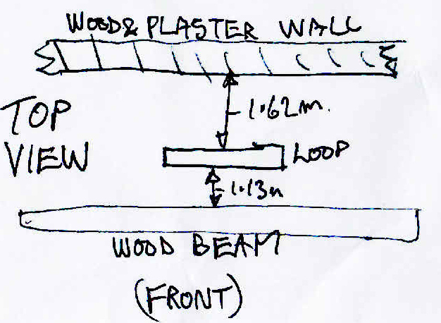

<figure>
	<a href="images/overview_f4wdo_loop_1a.jpg"></a>
	<figcaption>The antenna is mounted on a parasol stand in the attic, in a wooden structure with brick walls, 1.86 m above the ground.</figcaption>
</figure>


<figure>
	<a href="images/sketch_front.jpg"></a>
	<figcaption></figcaption>
</figure>
<figure>
	<a href="images/sketch_top.jpg"></a>
	<figcaption></figcaption>
</figure>


